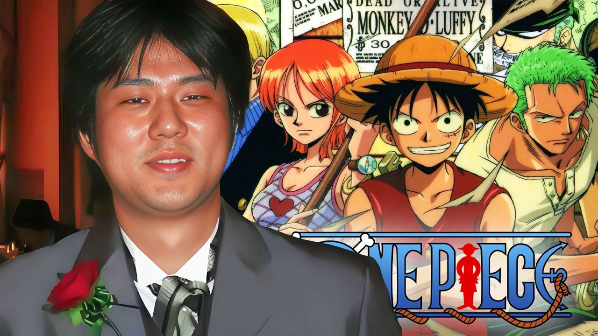

What is One Piece?

One Piece is a Japanese manga and anime series created by Eiichiro Oda. It was first serialized in
Shueisha's Weekly Shōnen Jump magazine on July 22, 1997, and the anime adaptation followed shortly
thereafter. It has since become one of the most popular and long-running anime series of all time,
with millions of fans around the world. The series is known for its adventurous storyline, unique
characters, and deep lore.
Storyline
One Piece follows the adventures of Monkey D. Luffy, a young pirate with the dream of becoming the Pirate King. Luffy sets out on a grand adventure to find the legendary treasure known as the One Piece which is said to grant the title of Pirate King to its holder. Along the way, Luffy forms a crew known as the Straw Hat Pirates, each member with their own dreams and unique abilities. Together, they sail the seas, battle powerful enemies, and uncover the mysteries of the world.
The story is set in a world divided by vast oceans and dangerous seas, known as the Grand Line. Luffy and his crew face many challenges, including battling against rival pirate crews, the World Government, and even ancient and powerful forces that threaten the balance of the world. As they progress through the Grand Line, the Straw Hat Pirates uncover secrets about the world’s history, Luffy’s mysterious Devil Fruit powers, and the true nature of the One Piece treasure.
Luffy once said, If you don’t take risks, you can’t create a future. -Monkey D Luffy
Straw Hat Pirates' Route in the Grand Line
The Straw Hat Pirates' journey begins at Reverse Mountain, where they enter the Grand Line. Their route takes them through various islands such as Whiskey Peak, Little Garden, Drum Island, and Alabasta. After overcoming numerous challenges and enemies, they continue to navigate through islands like Skypiea, Water 7, and Enies Lobby, eventually reaching Sabaody Archipelago.
Later in the series, they travel through the New World, encountering powerful enemies in Fishman Island, Punk Hazard, Dressrosa, and Whole Cake Island, before finally heading toward the dangerous territory of Wano Country. Their goal is to reach the final island, Raftel, where the One Piece treasure is rumored to be hidden.